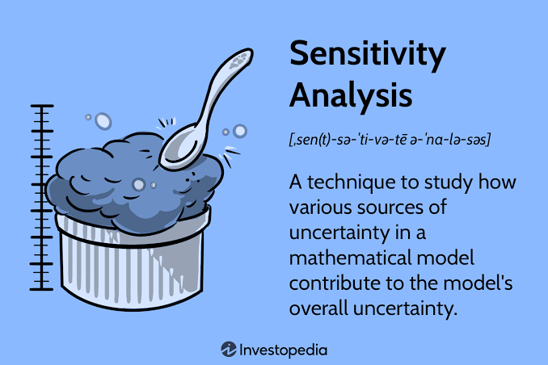

Sensitivity Analysis & Module Conclusion
Learn how to test the robustness of your DCF valuation using sensitivity analysis, and review the key concepts you have mastered in this module before moving to Applied Finance.

A Discounted Cash Flow (DCF) model is built on a foundation of assumptions about the future. Because the future is inherently uncertain, a single valuation number is rarely enough to make a confident investment decision.
Sensitivity analysis allows financial analysts to stress-test their models, showing how changes in key assumptions (like growth rates or discount rates) impact the final valuation, providing a realistic range of values rather than a false sense of precision.
What is Sensitivity Analysis?
Sensitivity analysis is a technique used to determine how different values of an independent variable affect a particular dependent variable under a given set of assumptions. In corporate finance, this is the ultimate "what-if" scenario planning.
The "Football Field" Chart
Investment bankers rarely rely on just one valuation method. They use sensitivity analysis to create a "football field" chart. This visual tool displays the valuation ranges derived from different methodologies (DCF, Comparable Companies, Precedent Transactions) side-by-side, giving clients a realistic spectrum of the company's worth.
Real-World Corporate Finance Example
Suppose your base-case DCF values Company X at $50.00 per share, based on a 10% WACC and a 2% Terminal Growth Rate.
Bear Case: If market risk increases (WACC rises to 11%) and growth slows (Terminal Growth drops to 1.5%), the model might output a share price of $42.00.
Bull Case: If the company executes perfectly, lowering its cost of capital (WACC drops to 9%) and accelerating growth (Terminal Growth rises to 2.5%), the share price might jump to $58.00.
Module 3 Recap: The DCF Journey
Let's review the foundational pillars of valuation you have successfully mastered in this module:
1. Free Cash Flow to Firm (FCFF): Calculating the true, unlevered cash generated by core operations, available to all investors.
2. Multi-Year Forecasting: Projecting future revenue and operating margins based on historical trends and business drivers.
3. Terminal Value: Capturing the vast majority of a company's value that occurs beyond the explicit 5-to-10 year forecast period.
4. EV to Equity Bridge: Translating the total Enterprise Value into the per-share Equity Value that investors actually buy and sell.
5. Sensitivity Analysis: Stress-testing the model to ensure your conclusions are robust, defensible, and grounded in reality.
What's Next?
You have successfully mastered the mechanics of Discounted Cash Flow valuation. In Module 4: Applied Finance, we will put these skills to the test with real-world case studies, Mergers & Acquisitions (M&A) scenarios, and advanced financial modeling techniques.
📝 Practice Quiz & Module Check
Complete all questions to unlock Module 4Answer the multiple-choice questions below. Scoring a perfect score will automatically mark this submodule and the entire module as completed!